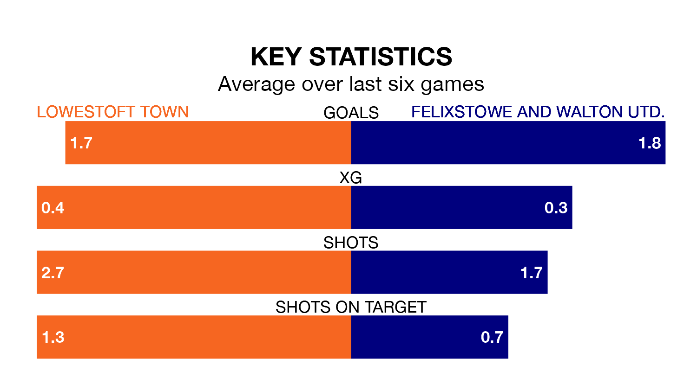

The Isthmian League Division One North's top two sides face each other at Crown Meadow in Saturday's kick-off, when Lowestoft Town host second-placed Felixstowe and Walton Utd..
Lowestoft have picked up 17 wins and two draws from 23 games so far this season, and sit three points above the visitors going into the 3pm match.
Felixstowe & Walton Utd., meanwhile, have won 15 and drawn five of 24, picking up 50 points.
With 63 goals in 23 games so far this season, Lowestoft are the league's highest scorers with 2.7 goals per game. And they are conceding fewer than average, letting in 27 goals at a rate of 1.2 per game.
Felixstowe & Walton Utd. are also above average scorers, with 2.3 goals per game, compared to a league average of 1.7. They have conceded 1.2 goals per game.
Town are in good form in the Isthmian League Division One North, with four wins and a draw from their last six games.
With five wins and a draw over that period, the visitors' form is better – they have taken 16 points from 18, compared to Trawler Boys' 13.
In the last three years, Lowestoft and Felixstowe & Walton Utd. have played each other on three occasions. Lowestoft won two of them and Felixstowe & Walton Utd. one.
Their last meeting was on January 13, when Felixstowe & Walton Utd. won 3-0 at home.
Lowestoft's last match was on February 6, a 1-0 win against Brentwood Town.
Felixstowe & Walton Utd. beat Brightlingsea Regent 2-0 last time out, on February 13.
Updated: 10:19 (UTC), 22/03/24